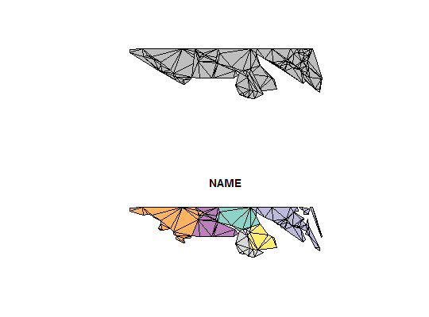

Constrained Delaunay Triangulation
Triangulate simple features including the input edges as constraints, rather than being bounded to the trim hull.
ct_triangulate(x, ...) # S3 method for sfg ct_triangulate(x, trim = TRUE, ...) # S3 method for sf ct_triangulate(x, trim = TRUE, ...)
Arguments
- x
- simple feature geometry or data frame
- ...
- arguments for methods
- trim
- drop triangles that fall "outside" i.e. "holes" and non-convex regions,
TRUEby default
Value
simple feature column or data frame
Details
This is not a Delaunay Triangulation, but is "mostly-Delaunay". All POLYGON, LINESTRING, MULTIPOLYGON and MULTILINESTRING inputs
are broken down into line segments that are included in the mesh. Holes are removed
by default, but can be retained with the trim argument.
The triangles are collected as POLYGONs within a GEOMETRYCOLLECTION, and in the case of an `sf` object it's returned within the original input data frame.
There's no way currently to retain the set of shared vertices, or the segment or the triangle indices.
Note
GEOMETRYCOLLECTION as input is not yet supported.
Examples
library(sf) nc <- st_read(system.file("shape/nc.shp", package="sf"))#> Reading layer `nc' from data source `C:\Users\mdsumner\Documents\R\win-library\3.3\sf\shape\nc.shp' using driver `ESRI Shapefile' #> converted into: MULTIPOLYGON #> Simple feature collection with 100 features and 14 fields #> geometry type: MULTIPOLYGON #> dimension: XY #> bbox: xmin: -84.32385 ymin: 33.88199 xmax: -75.45698 ymax: 36.58965 #> epsg (SRID): 4267 #> proj4string: +proj=longlat +datum=NAD27 +no_defsnc_triangles <- ct_triangulate(nc[, "NAME"]) plot(nc[, "NAME"])plot(nc_triangles, add = TRUE, col = NA, lty = "dotted")idx <- c(4, 5, 6, 7, 8, 20, 21) op <- par(mfrow = c(2, 1)) if (packageVersion("sf") <= '0.2.8'){ nc <- st_transform(nc, "+proj=eqc +ellps=WGS84") } plot(st_triangulate(nc[idx, "NAME"]), col = "grey") plot(ct_triangulate(nc[idx, "NAME"]))par(op) ## Not run: ------------------------------------ # library(rworldmap) # data(countriesLow) # sworld <- st_as_sf(countriesLow) # local_places <- c("Indonesia", "Papua New Guinea", "New Zealand", "Australia") # sworld <- sworld[sworld$SOVEREIGNT %in% local_places, ] # ## the centre of the universe # llprj <- "+proj=laea +ellps=WGS84 +lat_0=-42 +lon_0=147 +no_defs" # sworld <- st_transform(sworld, crs = llprj) # # x <- ct_triangulate(sworld) # plot(x[, "SOVEREIGNT"], main = "constrained vs convex\n Delaunay triangulation") # acols <- sf::sf.colors(nrow(sworld) # plot(st_triangulate(sworld), col = acols, alpha = 0.3), border = NA, add = TRUE) ## ---------------------------------------------